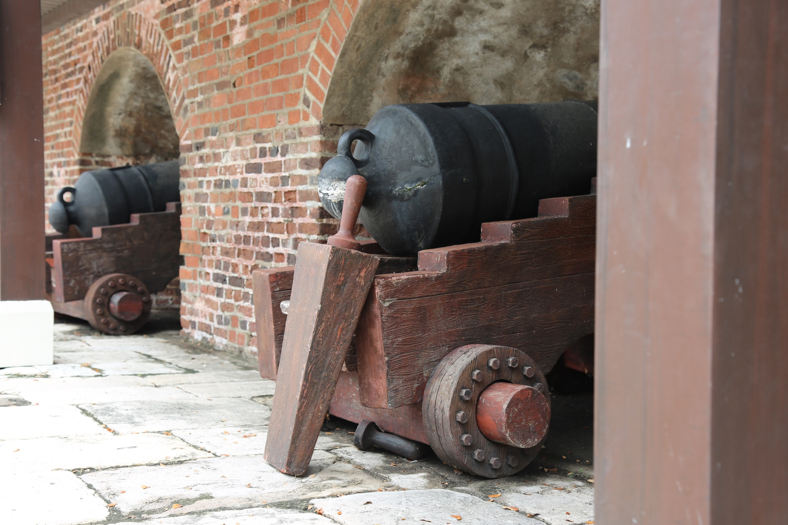
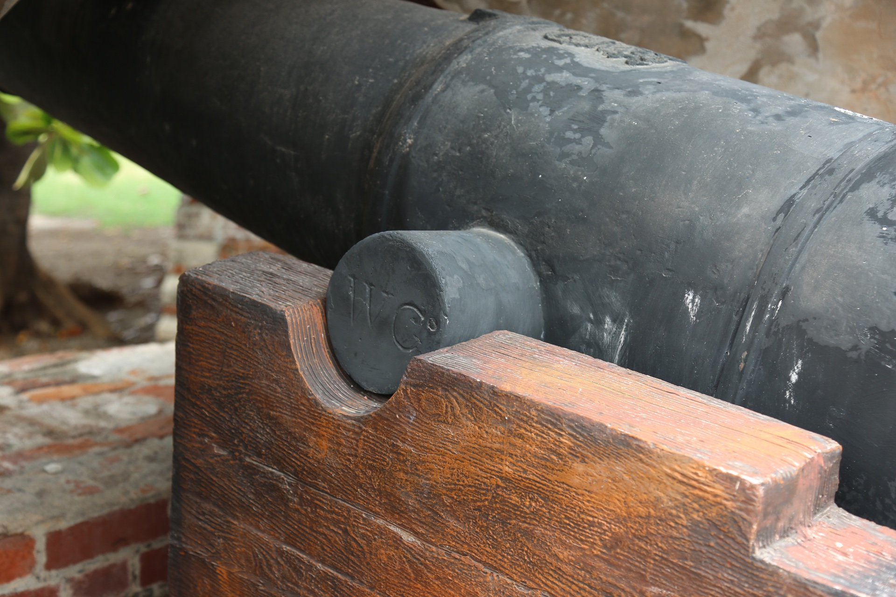
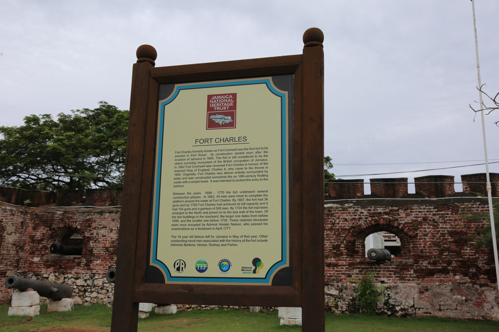

Kingston · Jamaica
Port Authority Sculptures
Large-scale heritage sculptures

The project
History.
Recreated in sculpture.
A series of large-scale sculptural pieces created for the Port Authority, including approximately 10-foot cannon replicas designed to resemble historical 18th-century pieces and incorporate the appearance of weathering and age.


